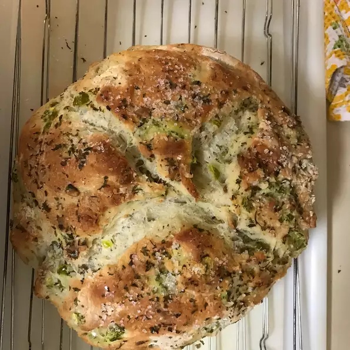

Olive Bread

The olives sit in a liquid with garlic and herbs; when draining,
please try to reserve as much of the herbs and garlic as possible.
Alternatively, you can add in your own garlic and freeze-dried basil.
If you do not have an iron skillet, you can use a stoneware baking dish.
It is important to remove bread from the pan as soon as it comes out of the oven, because bread left in the pan will get moist and soggy.
Ingredients
- 2 cups lukewarm water (105 degrees F, 40 degrees C)
- 1 (.25 ounce) package active dry yeast
- ½ tablespoon salt
- 4⅓ cups all-purpose flour, divided
- 1 cup marinated olives (such as Star® Garlic & Basil) - drained, chopped, and herbs and garlic reserved
- 1 teaspoon garlic powder
- 2 tablespoons olive oil, divided
- coarse salt
- 1 teaspoon dried parsley, or as needed
Steps
- Combine water and yeast in a large mixing bowl. Add 1 cup flour and 1/2 tablespoon salt. Stir using a wooden spoon until combined. Stir in olives, reserved herbs and garlic, and garlic powder. Add remaining flour 1 cup at a time, stirring until thoroughly combined. Cover bowl with plastic wrap and set in a warm spot to rise for 1 hour.
- Add 1 tablespoon oil to an 8-inch cast iron skillet and spread to coat bottom and sides. Flour your hands. Remove plastic wrap from bowl and transfer dough to the prepared skillet and shape into a disc. Cover with a kitchen towel and let stand for 30 minutes.
- Preheat the oven to 400 degrees F (200 degrees C).
- Drizzle remaining oil on top of the loaf and sprinkle with salt and parsley. Score the top of the loaf with a knife.
- Bake in the preheated oven until the top is nicely browned, 30 to 35 minutes.
- Remove bread from oven and turn on to a wire rack to cool before serving, about 20 minutes.